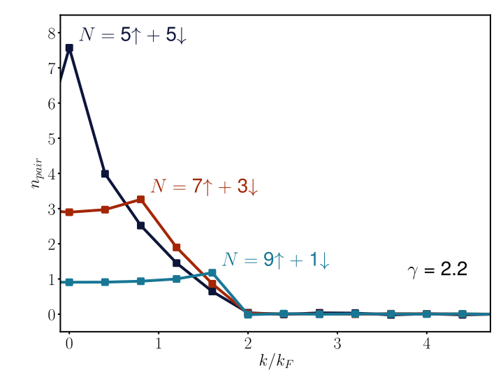
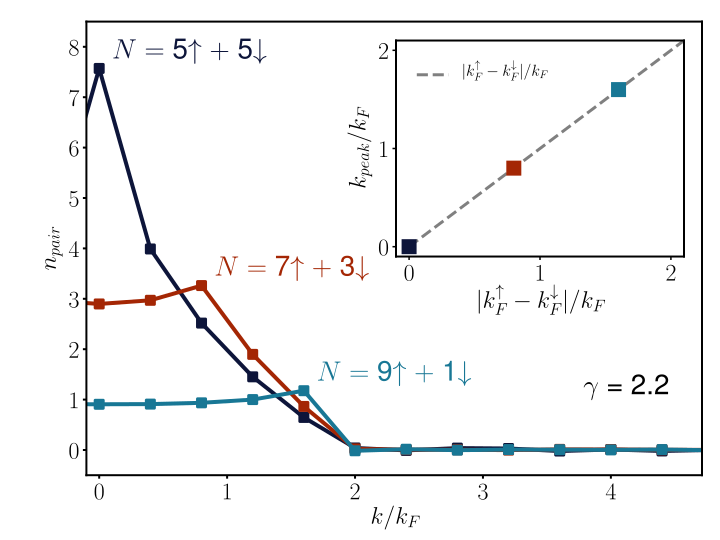
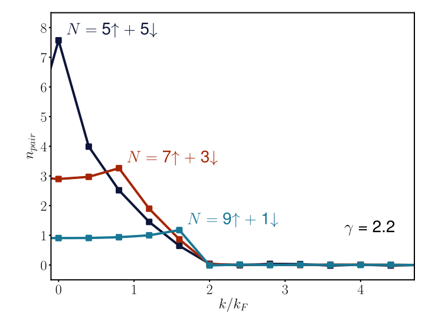
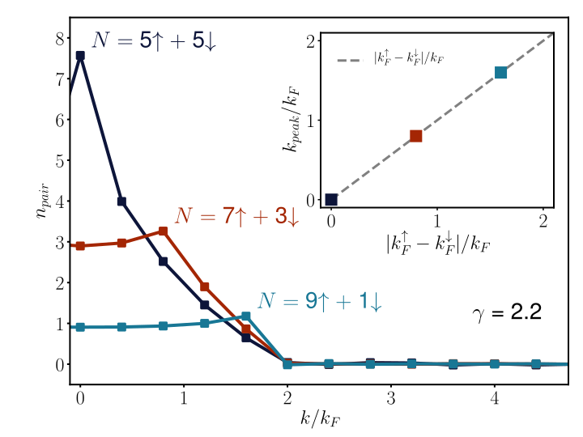

The complex Langevin method
for ultracold fermions
[LR, Porter, Drut, Braun Phys. Rev. D 96, 094506, 2017]
[LR, Porter, Drut Phys. Rev. A 93, 033639, 2016]


neutron stars, controllable experiments, ...)

(inhomogenoeus phases?)
(inhomogenoeus phases?)


$\mathcal{Z} = \text{Tr}[{\mathrm e^{-\beta\hat{H}}}] = \text{Tr}[{\mathrm e^{-\beta(\hat{T}\ +\ \hat{V})}}]$
$\langle \mathcal{O} \rangle = \frac{1}{\mathcal{Z}}\text{Tr}[{\hat{\mathcal{O}}\,\mathrm e^{-\beta\hat{H}}}]$
discretize space & time, decouple the interaction
with a Hubbard Stratonovich transformation
Rewrite the problem as a path-integral:
$\mathcal{Z} = \int{\mathcal{D}\phi\ \det M_{\phi}^{\uparrow}\,\det M_{\phi}^{\downarrow}} \equiv \int{\mathcal{D}\phi\ \mathrm e^{-S[\phi]}}$
$\langle\mathcal{O}\rangle = \int{\mathcal{D}\phi\ P[\phi]\,\mathcal{O}[\phi]}$
produce a set of random auxiliary-field configuations $\{\phi_i\}$,
compute observables & average for expecation values
probability measure:
$P[\phi]\ \propto\ \det M_{\phi}^{\uparrow}\,\det M_{\phi}^{\downarrow} =
\begin{cases}
\text{attractive, balanced case}\ \rightarrow \text{OK} \\
\text{otherwise}\ \rightarrow \text{sign problem}
\end{cases} $
stochastic quantization: equilibrium distribution of a
$(d+1)$-dimensional random process is identified with
the probability measure of our $d$-dimensional path integral
random walk governed by Langevin equation (Brownian motion):
$\frac{\partial\phi}{\partial t} = -\frac{\partial S[\phi]}{\partial\phi} + \eta(t)$
[Loheac, Drut '17; LR, Porter, Drut, Braun '17]

Outliers skew
expectation values!
('fat tail' problem)
no outliers,
no problems!

[DFT-RG: Kemler, Pospiech, Braun '16]
[HMC: LR, Porter, Loheac, Drut '15]

$p = \frac{N_\uparrow-N_\downarrow}{N_\uparrow+N_\downarrow}$
 



$p = \frac{N_\uparrow-N_\downarrow}{N_\uparrow+N_\downarrow}$
finite lattice!
($V = 9^3$)
($\lambda_T \ll V^{1/3}$ must be fulfilled)